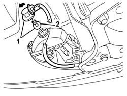
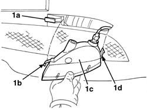
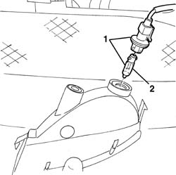

5550C18 bulb of one front turn signal, l/h or r/h - r+r
- Path
- Procedures > 55 ELECTRICAL EQUIPMENT > 5550 MANOEUVRING AND WARNING SIGNALS > 5550C turn signal/hazard warning lights > 5550C18 bulb of one front turn signal, l/h or r/h - r+r
- Kind
- repair procedure (removal / refitting; the operation number is the code)
- Applies to
- all engines; all production periods
- Interactive page
- https://sloeber94.github.io/elrnDB-a147/en/#/3025575
Applies to: all engines; all production periods
 Removing
Removing
 Refitting
Refitting7055B54 under-engine guard - r r
5550C30 l/h or r/h front turn signal (one) - r+r (for the right lamp only)
1. Rotate the bulb holder with the bulb in an anti-clockwise direction and extract it.
2. Extract the bulb from the bulb holder. The bulb has a bayonet fitting.

Applies to: all engines; all production periods
Refitting
RemovingFit the bulb in the bulb holder.
Insert the bulb holder with the bulb in its housing and rotate it in a clockwise direction.
5550C30 l/h or r/h front turn signal (one) - r+r (for the right lamp only)
Check the operation of the direction indicator.
Applies to: all engines; all production periods; only with equipment: GTA
Removing
Refitting1. Insert a screwdriver in the housing (1a) and release the tab (1b) then extract the front direction indicator (1c) gently releasing the retainer (1d).

Applies to: all engines; all production periods; only with equipment: GTA
1. Rotate the bulb holder and bulb and extract it (bayonet fitting).
2. Extract the bulb from the bulb holder. The bulb has a bayonet fitting.

Applies to: all engines; all production periods; only with equipment: GTA
Refitting
RemovingFit the bulb in the bulb holder.
Fit the bulb holder and bulb and rotate it into position.
Fit the direction indicator in place engaging the retainer and the tab.
Check the operation of the direction indicator.